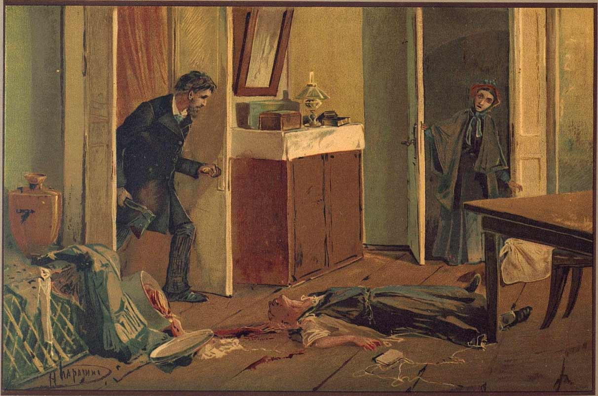
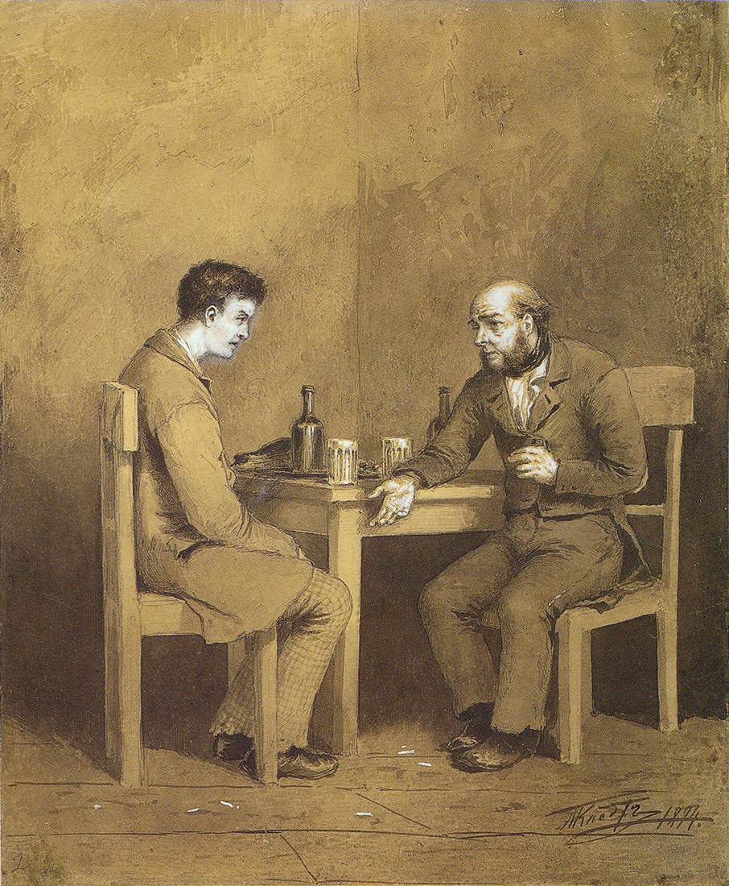

I. The Theory and the Murder
On a stifling July evening in St Petersburg, a young man slips out of his lodgings and into the street. Rodion Raskolnikov is a destitute ex-student, half-starved and feverish with an idea. He has been brooding for weeks over a theory: that extraordinary men — the Napoleons of the world — possess the moral right to step over ordinary law in pursuit of higher ends. Ordinary people exist to be ruled; great ones to transgress. He has begun to suspect he might be one of the great ones.

His destination is the flat of Alyona Ivanovna, an elderly pawnbroker. He has visited her twice before, with trinkets — once a ring, once a watch — ostensibly to raise a few kopecks, in truth to study her. He has decided she is a louse: greedy, cruel to her gentle half-sister Lizaveta, useful to no one alive. To kill her would be a service. With her hoarded money, he could fund his studies, support his sister, do real good in the world. The arithmetic seems unanswerable.
"Taking a new step, uttering a new word, is what people fear most."
— Raskolnikov, internal monologueSo he tells himself, walking. He has rehearsed every detail. He has sewn a loop inside his coat to hide the axe. He has memorised the staircase. And yet, on the threshold, his body refuses him. He is sweating, sick, almost laughing at his own terror. He pulls the bell.
Inside the pawnbroker's flat, with the door bolted behind him, he produces a fake silver cigarette case wrapped in paper. While the old woman fumbles with the knot, he draws the axe from his coat and brings it down on her head. Once. Twice. She drops without a sound. He searches the body with shaking hands, unhooking her keys, scrabbling at a chest of drawers. He takes a purse, some pledges — almost nothing of what he came for.
Then a footstep. Lizaveta has come back. She stands in the doorway, harmless and astonished, and he kills her too. The second murder is the one he never planned and never recovers from.
"Pain and suffering are always inevitable for a large intelligence and a deep heart."
— Raskolnikov reflectingHe flees by improbable luck — visitors arrive at the door, he hides on a lower landing, slips out behind them — and stumbles back to his garret with the stolen pledges still in his pockets. He hides them under the wallpaper. Then he collapses.
The Theory Meets the Body
Dostoevsky compresses the entire arc of the novel into its first chapters: a man with an idea, a body on a floor, and the moment the idea fails to absorb the body. Raskolnikov's theory is not stupid — that is the horror of it. It is rigorous, intellectually defensible, and built by a clever man. What it cannot account for is Lizaveta. The accidental second murder is the fact that breaks the equation. From here on, the punishment is already underway; only the trial is delayed.
II. The Fever
Raskolnikov collapses into delirium for days. He sleeps and wakes without distinguishing the two. His friend Razumikhin — warm, broad-shouldered, incapable of suspicion — finds him in the garret, fetches a doctor, sits with him through the worst. Raskolnikov is alternately grateful and savage. He cannot bear to be looked at. He cannot bear to be alone. The murder has not freed him from anything; it has fused itself to his nervous system.

A summons arrives from the police — not, as he believes for an instant, about the murders, but about an unpaid debt. He goes anyway, dazed, certain he will be found out. Sitting in the stuffy room he overhears a clerk discussing the murders. The walls swim. He stands, staggers, and faints in front of the officers. The clerk who notices is, fortunately, a fool. But Raskolnikov has revealed himself, and a dangerous awareness now exists.
Out in the streets of Petersburg, he witnesses a horror. A drunken civil servant named Marmeladov — a man Raskolnikov met once in a tavern, who confessed to him, with theatrical self-loathing, that he had reduced his family to ruin and his daughter to prostitution — staggers under a horse's hooves and is trampled. Raskolnikov helps carry him home to die. There he meets the daughter for the first time: Sonya Marmeladova, eighteen, dressed in the cheap finery of her trade, carrying herself with a strange, unbreakable dignity. She looks at her dying father without flinching. Raskolnikov gives the family his last roubles for the funeral.
"We sometimes encounter people, even perfect strangers, who begin to interest us at first sight, somehow suddenly, all at once, before a word has been spoken."
— Narrator, on Raskolnikov meeting SonyaHe returns to the garret to find his mother and his sister Dunya waiting. They have travelled from the provinces to be near him — full of fragile hope, full of news. Dunya is to marry a respectable man named Luzhin, who will rescue all of them from poverty. The mother glows. Dunya is grave. Raskolnikov, a murderer with two days' blood on his soul, looks at his proud, principled sister selling herself to a smug lawyer for his sake, and almost loses what is left of his mind.
The Body Punishes the Mind
Raskolnikov expected to feel like a Napoleon. Instead he feels like a sick man. The fever is the novel's first answer to the theory: the human organism is not a piece of philosophy. Sonya's appearance, in the same chapter, plants the only counter-force the book will offer — not argument but presence. She has suffered far more than he has. She has not built a theory to justify it. She has simply borne it, and the bearing has somehow not destroyed her. He cannot stop looking at her.
III. The Trap
The investigating magistrate is a soft-spoken, plump, slightly absurd man named Porfiry Petrovich. He giggles. He pads about his office. He never quite asks a direct question. Raskolnikov, brought along by Razumikhin under a thin pretext, walks into their first meeting expecting a fool and finds something far worse: a man who appears to know exactly what he is doing.
Porfiry has read an article Raskolnikov published months ago, defending exactly the theory under which the murders were committed: that extraordinary men are entitled to step over ordinary moral law for higher purposes. Porfiry asks pleasant, casual questions about it. He smiles. He probes. He pretends not to understand, then suddenly does. Raskolnikov defends the theory in increasingly tangled terms, and each clarification narrows the room around him.
"It takes something more than intelligence to act intelligently."
— RaskolnikovMeanwhile his sister's life is unravelling alongside his own. Luzhin reveals himself in conversation as exactly what Raskolnikov has feared: a small, vain man who wants a poor wife so she will be permanently grateful. Razumikhin, watching Dunya, falls quietly and deeply in love. And then a new figure arrives in Petersburg — Svidrigailov, Dunya's former employer, a sleek and unsettling sensualist whose wife has just conveniently died. He claims to have come for nothing more than to see Dunya once. No one believes him.
"To go wrong in one's own way is better than to go right in someone else's. In the first case you are a man, in the second you're no better than a bird."
— RazumikhinA second interview with Porfiry follows. This time the magistrate plays his game more openly. He talks of his methods — the patient closing of the net, the way a guilty man cannot bear to wait, will always make some small movement that gives him away. Raskolnikov sweats. He almost shouts. Then, walking home through the crowd, a stranger steps up beside him, looks him in the face, and says one quiet word: murderer.
The Net Without a Knot
Porfiry never accuses, never charges, never raises his voice. His method is psychological — he understands that a guilty conscience cannot bear suspense, and that the suspect will, given time, walk himself into the snare. Dostoevsky uses this to externalise what is happening inside Raskolnikov: the closing-in is also self-pursuit. Svidrigailov's arrival deepens the threat by mirroring it — here is the same theory of permitted transgression, lived to its sensual extreme by a man who feels nothing about it at all. Raskolnikov is being shown, in the same chapter, the trap and his own future.
IV. Confession
Raskolnikov goes to work on Luzhin first. At a tense gathering arranged by his mother, Luzhin is exposed in a clumsy attempt to frame Sonya for theft — he has slipped a banknote into her pocket and accused her of stealing it, hoping to discredit Raskolnikov by association. Razumikhin, fortunately, has seen him do it. The plot collapses. Dunya breaks the engagement on the spot. Luzhin shrinks out of the house, deflated and dangerous, and is barely seen again.
Then Raskolnikov goes to Sonya's room. He does not yet know why. He has known her only days. She lives in a strange, slanting attic on the other side of the city, sparse and threadbare, with a worn copy of the New Testament on the table. He asks her to read him the story of Lazarus.
She reads. Her voice trembles — she is afraid he will mock her — but he does not mock. By the time she reaches Christ's command to the dead man to come out of the tomb, both of them are weeping. Then he tells her. He says, plainly and without drama, that he is the one who killed the pawnbroker and Lizaveta. Sonya does not flinch. She does not condemn him. She kneels in front of him.
"I did not bow down to you, I bowed down to all the suffering of humanity."
— Raskolnikov to SonyaShe tells him to confess. To go to the crossroads, kiss the earth he has defiled, declare his guilt aloud to the world. He refuses. He still half-believes the theory; or rather, he can no longer believe it but cannot bear to discard it, because to discard it is to admit that he is not a Napoleon but only a pitiful man who killed a frightened old woman for nothing. He argues. He raves. He insists he is not what she thinks he is.
"The man who has a conscience suffers whilst acknowledging his sin. That is his punishment."
— Porfiry PetrovichOutside, fortune offers him a reprieve he cannot use. A house-painter named Nikolai, deranged by guilt over an unrelated misdeed, suddenly bursts into the police station and confesses to the pawnbroker's murder. Porfiry knows the confession is false — he has met the painter, and the man is no killer — but Raskolnikov, for now, is shielded. The same week, Katerina Ivanovna, Marmeladov's consumptive widow, finally breaks. Pride-mad and starving, she drags her three small children into the street to beg, collapses there, and dies coughing blood onto the cobblestones.
"Only to live, to live and live! Life, whatever it may be!"
— RaskolnikovThe Confession Without the Surrender
Raskolnikov speaks the words, but he has not yet given up the theory that made the killings possible. Confession to Sonya is intimate; confession at the crossroads, as she demands, is communal — a return to the human community he tried to step out of. He cannot face it yet. Dostoevsky distinguishes carefully between admitting a deed and renouncing the idea behind it. The first is hard. The second, for an intellectual proud of his intellect, is harder still. The Lazarus reading is the hinge: Sonya offers him the possibility of being raised from the spiritual death he has chosen. He does not yet take it.
V. The Reckoning
Svidrigailov has overheard everything. The wall between his lodgings and Sonya's is paper-thin, and he has been listening for days. Now he has the leverage he wanted: he uses it not on Raskolnikov but on Dunya. He lures her to his rooms with the promise of telling her what her brother has done, then locks the door. Dunya pulls a revolver. She fires once, grazing him; she fires again, and the gun fails. He could take her. He is, suddenly, too tired. He lets her go.
That night Svidrigailov gives most of his money away — to Sonya, to the Marmeladov children, to a girl he has been keeping — books a hotel room near a fire watchtower, and at dawn shoots himself in the head. The book records it almost without comment. He has spent his life acting on the same theory Raskolnikov merely held, and discovered that there is, finally, nothing on the other side of it.
Porfiry visits Raskolnikov one last time. He no longer plays the foolish bureaucrat. He says, calmly and without flourish, that he knows. He has known for some time. He could arrest him now, but he will give him a day or two to come in himself — the sentence will be lighter, the burden lighter, the man recoverable. He says it like a doctor advising surgery. Raskolnikov, hollowed out, walks the streets in a daze.
"Am I a trembling creature, or have I the right?"
— Raskolnikov, the central questionHe goes to Sonya. She gives him her cypress-wood cross. He refuses it, then takes it. He walks to the Haymarket. There, in front of strangers, he kneels in the dirt and kisses the earth. People laugh; some assume he is drunk. He cannot quite say the words aloud. But he goes from there to the police station, climbs the stairs, and tells the officer at the desk that he is the man who killed the pawnbroker and her sister. Sonya is waiting outside in the corridor. He sees her face. He says it again, fully this time, and signs the deposition.
"Go at once, this very minute, stand at the crossroads, bow down, first kiss the earth which you have defiled and then bow down to all the world and say to all men aloud, I am a murderer!"
— Sonya to RaskolnikovThe court, considering his confession, his mental state, and his earlier acts of charity, sentences him to eight years' hard labour in Siberia. Sonya follows him there. For more than a year he refuses her message and clings, in some last corner of himself, to the theory: he was unlucky, that is all; only the failure was a crime. Then, one spring morning, in the prison hospital recovering from an illness that nearly killed him, he sees her walking towards him across the yard. Something in him gives way.
The Resurrection That Begins in a Hospital
Dostoevsky's epilogue is famously divisive — some readers find it unearned. Look more carefully and the work is exact. Raskolnikov does not reason his way to repentance. He is broken open by illness, by Sonya's patient presence, by the loss of the last shred of intellectual pride. The theory that an extraordinary man stands above moral law dies the only death it can — not refuted in argument but starved out by life. Svidrigailov's suicide marks one terminus of that road; Sonya's love marks the other. The novel ends not with a verdict but with a slow, painful return to ordinary humanity — which is, Dostoevsky insists, the only place redemption is possible.
Why It Matters
The Superman Theory
- Raskolnikov believes extraordinary individuals stand above ordinary moral law
- The novel does not refute the theory in argument — it dismantles it through the body and the conscience
- Svidrigailov is the same theory lived out: it ends in suicide, not greatness
- Dostoevsky anticipates Nietzsche by twenty years — and answers him in advance
Guilt as Punishment
- The true punishment begins the instant after the crime, not at the trial
- Raskolnikov is sick before he is suspected, hunted before he is pursued
- Porfiry's psychological method is the novel's moral law made flesh
- The state's sentence, when it finally comes, feels almost an afterthought
Redemption through Suffering
- Dostoevsky argues redemption requires submission, not intellectual pride
- Sonya's faith is uncomplicated, unintellectual, and the only path that works
- The crossroads gesture is not symbolic — it is the act itself, public and humbling
- The epilogue is a beginning, not an ending: love is announced, not resolved
Legacy and Influence
- One of the founding works of modern psychological fiction
- Influenced Nietzsche, Camus, and Sartre; prefigures Freudian ideas about guilt and the unconscious decades before Freud
- Adapted into more than 25 films and TV series in over a dozen languages
- Routinely ranked among the greatest novels ever written, in any language
Fun Facts
- Dostoevsky wrote the novel under crushing pressure: in 1865 he was deep in gambling debts and signed a punishing contract to deliver a separate book in 30 days, which he dictated to a stenographer named Anna Snitkina — whom he later married.
- The novel was serialised throughout 1866 in the journal The Russian Messenger, in twelve monthly instalments. It was an immediate sensation.
- Dostoevsky based parts of Raskolnikov's psychology on his own experience: in 1849 he had been sentenced to death for political activity, marched to a firing squad, and reprieved at the last moment. He spent four years in a Siberian prison camp.
- The pawnbroker murders were inspired in part by an 1865 Moscow newspaper case — a young man named Gerasim Chistov who killed two women with an axe and stole their valuables.
- Nietzsche, who read Dostoevsky in his last sane years, called him the only psychologist from whom he had something to learn — even though Dostoevsky's whole project was to refute the kind of philosophy Nietzsche would later build.
- The Russian title is Prestuplenie i Nakazanie, literally "Transgression and Chastisement" — a slightly stronger pairing than the English "Crime and Punishment".
Quotes
"Taking a new step, uttering a new word, is what people fear most."
— Raskolnikov, internal monologueRaskolnikov tells himself this on the way to commit murder. He flatters himself that the hesitation he feels is mere conventional cowardice — the kind that holds back lesser men from greatness. Dostoevsky lets the line stand without commentary. The whole novel is the slow refutation of it. The "new step" turns out not to be a step into greatness but into a sickness from which only humility can return him.
"Pain and suffering are always inevitable for a large intelligence and a deep heart."
— Raskolnikov reflectingA sentence that flatters itself even as it suffers. Raskolnikov's intelligence is real; his suffering, real. But the line conflates the two with a young man's vanity — the suggestion that pain is a credential. Dostoevsky believed the opposite: that suffering becomes meaningful only when it stops being a private theatre and becomes shared. Sonya, who never thinks in these terms, suffers more and more usefully than the man who composes sentences about it.
"We sometimes encounter people, even perfect strangers, who begin to interest us at first sight, somehow suddenly, all at once, before a word has been spoken."
— Narrator, on Raskolnikov meeting SonyaThe narrator drops this aside in the middle of the Marmeladov death scene. It is one of the few moments in the novel where Dostoevsky speaks plainly, without irony or character mask. The recognition between Raskolnikov and Sonya is fated in this older sense — not romantic destiny but moral necessity. Each of them is, without yet knowing it, the only person who can address what is wrong in the other.
"It takes something more than intelligence to act intelligently."
— RaskolnikovThe sentence is a self-indictment Raskolnikov does not fully understand when he speaks it. He is among the most intelligent characters Dostoevsky ever wrote, and his intelligence has helped him commit a moral disaster. The novel suggests what the missing element is — some combination of conscience, humility, and connection to other people — without ever quite naming it. That is the writer's discipline: he shows the gap rather than filling it with a slogan.
"To go wrong in one's own way is better than to go right in someone else's. In the first case you are a man, in the second you're no better than a bird."
— RazumikhinRazumikhin says this in defence of intellectual independence, in a tirade against the borrowed European ideas fashionable among young Russians of the 1860s. It is a Dostoevsky position, almost undisguised. But the novel complicates the line in real time: Raskolnikov goes wrong in his own way precisely by treating his ideas as more authoritative than other people's lives. Independence of mind is necessary; it is not sufficient. The novel is a long argument with this sentence as much as it is an endorsement of it.
"I did not bow down to you, I bowed down to all the suffering of humanity."
— Raskolnikov to SonyaHe has dropped to her feet in her shabby attic. She is mortified; he explains. The line is one of the most exact statements in nineteenth-century fiction of what Dostoevsky believed Christianity actually meant — not a system of doctrine but an act of recognition. Sonya's particular suffering is also general; honouring hers is honouring all of it. It is the closest Raskolnikov comes, in the body of the novel, to leaving his theory behind.
"The man who has a conscience suffers whilst acknowledging his sin. That is his punishment."
— Porfiry PetrovichPorfiry says this almost casually during their last interview. It is the novel's title in a sentence. The crime is the deed, but the punishment — the real one — is the conscience that knows. Siberia is afterthought. Porfiry is not a philosopher; he is a working magistrate. That such a sentence comes from him, in his soft pleasant voice, gives it more weight than any speech the same idea could be given.
"Am I a trembling creature, or have I the right?"
— Raskolnikov, the central questionThe whole novel hangs on this binary — and the whole novel undoes it. Raskolnikov has divided humanity into two classes: the trembling and the entitled. By the time he asks the question with full force, both halves of the dichotomy have collapsed in him. He is trembling. He is not entitled. The question itself was the trap. Dostoevsky's answer is not to choose a side but to dismantle the frame.
"Go at once, this very minute, stand at the crossroads, bow down, first kiss the earth which you have defiled and then bow down to all the world and say to all men aloud, I am a murderer!"
— Sonya to RaskolnikovSonya's instruction is precise: at the crossroads, in public, on the earth itself. It is not legalistic; it is liturgical. The murder severed Raskolnikov from the human community, and only a public, bodily, almost peasant gesture — a kiss to the dirt — can put him back inside it. He resists for chapters. When he finally goes, he can barely manage the words. That is enough.
Quiz
Three questions on themes and ideas. Not plot recall.
1. Raskolnikov's theory divides humanity into "ordinary" people and "extraordinary" ones who may transgress moral law. How does the novel ultimately treat this theory?
2. Why is Sonya, rather than Razumikhin or Dunya, the figure who can move Raskolnikov toward redemption?
3. Porfiry never arrests Raskolnikov, even when he is certain of his guilt. Why does the novel give him this restraint?